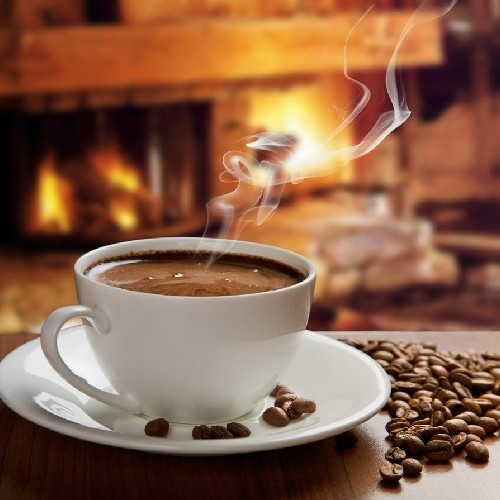

Pagina de Jose Huanca



La materia favorita de Jose Huanca es Web, ya que le gusta mucho lo que es el desarrollo de sitios y aplicaciones web. Se siente atraído por la creatividad
y la tecnología que implica construir experiencias en línea que sean tanto funcionales como visualmente atractivas.
El pasatiempo favorito de Jose Huanca es tomarse un muy buen café ya que es relajante y mejor si es tomandolo en un buen lugar
como ser bajo la lluvio o en una muy buena cafeteria el mejor clima para Jose donde tomar un café es la lluvia.
La segunda materia favorita de Jose Huanca es la de Programaciona aunque se le dificulta mucho aveces le gusta hacer proramas ya que desde mucho antes tuvo
la curiosidad de saber como y hacerlo.
El segundo pasatimepo favorito de Jose Huanca es la de jugar videojuegos ya que es muy divertido interactuar con otros jugadores, mejorsi son con amigos
donde se arma lo mas divertido en los juegos.